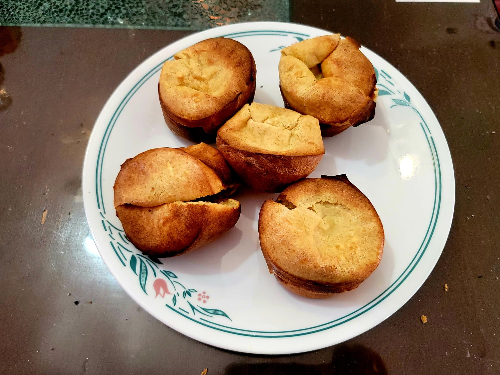

Sourdough Popovers

Ingredients:
- 1/2 cup (113g) Sourdough starter
- 1 cup (227g) Milk
- 3 Eggs
- 3/4 tsp Salt
- 1 cup (120g) Flour
Instructions:
- Place a muffin tray into an oven and preheat to 450 degrees Fahrenheit.
- Combine the sourdough starter, milk, eggs, and salt into large bowl. Mix with a handmixer on low. Do not whip the mixture. Then slowly mix in the flour. It should be about the consistency of heavy cream.
- Remove the muffin tray from the oven and carefully grease it with non-stick spray. Fill in every other muffin cup all the way with the mixture. Spacing the popovers will give them room to expand without touching.
- Place the muffin tray back into the oven and bake at 450 degrees Fahrenheit for 15 minutes. Then reduce the heat and cook for 15-20 more minutes, or until evenly golden. Remove from the oven and serve immediately.